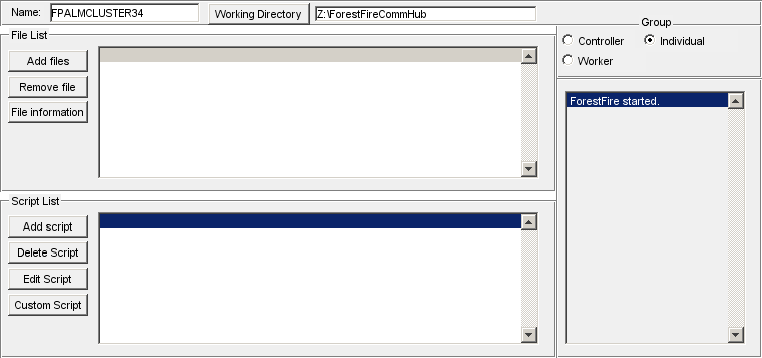
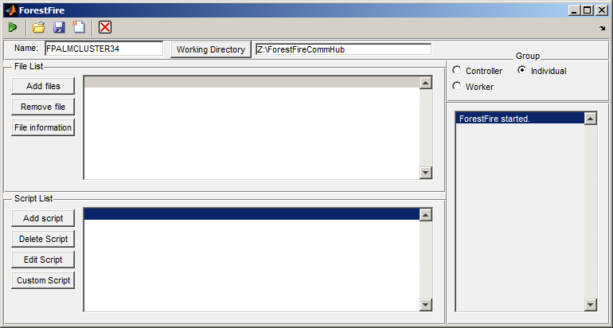

Contents
- Inititalization of strings and global variables
- CreateFunctions that serve little purpose have been grouped together
- Resizing the figure window is handled here
- Unused callbacks
- Loading Scripts
- Deleting Scripts
- Creating custom scripts
- Editing Scripts
- Adding files
- Removing files
- Begin processing
- Load configurations
- Save current configuration
- Clear the GUI
- Abort operations
- Change network directory
- Internally used function for updating the in-program display
- Another internally used function for turning cells of strings into formatted strings
- Role selection group pannel
- Timer start function for network polling
- Timer stop function for network polling
- Program close callback
- Worker network function
- Controller network function
function varargout = ForestFire(varargin)
gui_Singleton = 0; gui_State = struct('gui_Name', mfilename, ... 'gui_Singleton', gui_Singleton, ... 'gui_OpeningFcn', @ForestFire_OpeningFcn, ... 'gui_OutputFcn', @ForestFire_OutputFcn, ... 'gui_LayoutFcn', [] , ... 'gui_Callback', []); if nargin && ischar(varargin{1}) gui_State.gui_Callback = str2func(varargin{1}); end if nargout [varargout{1:nargout}] = gui_mainfcn(gui_State, varargin{:}); else gui_mainfcn(gui_State, varargin{:}); end
Inititalization of strings and global variables
function ForestFire_OpeningFcn(hObject, eventdata, handles, varargin)
%set(gcf,'Position',[0 0 150 30]); addpath(genpath(cd)) handles.outstring='ForestFire started.'; figure1_ResizeFcn(hObject, eventdata, handles); set(handles.filelistbox,'String',{''}); set(handles.scriptlistbox,'String',{''}); set(handles.outputlistbox,'String',{''}); set(handles.workernametext,'String',getenv('COMPUTERNAME')); set(handles.workingdirectorytext,'String','Z:\ForestFireCommHub') % This function has no output args, see OutputFcn. % hObject handle to figure % eventdata reserved - to be defined in a future version of MATLAB % handles structure with handles and user data (see GUIDATA) % varargin command line arguments to ForestFire (see VARARGIN) % Choose default command line output for ForestFire handles.output = hObject; handles.saved=1; handles.role=3; handles.CheckTimer=timer('BusyMode','drop','ExecutionMode','fixedDelay','Period',5); handles.status='available'; handles.controller_name='none'; % Update handles structure guidata(hObject, handles);
function varargout = ForestFire_OutputFcn(hObject, eventdata, handles)
% varargout cell array for returning output args (see VARARGOUT); % hObject handle to figure % eventdata reserved - to be defined in a future version of MATLAB % handles structure with handles and user data (see GUIDATA) % Get default command line output from handles structure varargout{1} = handles.output;
CreateFunctions that serve little purpose have been grouped together
function filelistbox_CreateFcn(hObject, eventdata, handles) %#ok<*DEFNU> if ispc && isequal(get(hObject,'BackgroundColor'), get(0,'defaultUicontrolBackgroundColor')) set(hObject,'BackgroundColor','white'); end function scriptlistbox_CreateFcn(hObject, eventdata, handles) if ispc && isequal(get(hObject,'BackgroundColor'), get(0,'defaultUicontrolBackgroundColor')) set(hObject,'BackgroundColor','white'); end function outputlistbox_CreateFcn(hObject, eventdata, handles) if ispc && isequal(get(hObject,'BackgroundColor'), get(0,'defaultUicontrolBackgroundColor')) set(hObject,'BackgroundColor','white'); end function workernametext_CreateFcn(hObject, eventdata, handles)
if ispc && isequal(get(hObject,'BackgroundColor'), get(0,'defaultUicontrolBackgroundColor')) set(hObject,'BackgroundColor','white'); end
Resizing the figure window is handled here
function figure1_ResizeFcn(hObject, eventdata, handles)
figpos=get(gcf,'Position'); figwidth=figpos(3); figheight=figpos(4); filepos=get(handles.filelistpannel,'Position'); scriptpos=get(handles.scriptlistpannel,'Position'); grouppos=get(handles.grouppannel,'Position'); outputpos=get(handles.outputpannel,'Position'); width1=(108/148)*figwidth; if width1<50; width1=50; end; width2=(40/148)*figwidth; if width2<20; width2=20; end; height1=(1/2)*figheight-1; if height1<10; height1=10; end; height2=figheight-1-5; if height2<19; height2=19; end; set(handles.filelistpannel,'Position',[0 height1 width1 height1]); set(handles.scriptlistpannel,'Position',[0 0 width1 height1]); set(handles.grouppannel,'Position',[width1 height2 width2 5]); set(handles.outputpannel,'Position',[width1 0 width2 height2]); set(handles.namepannel,'Position',[0 figheight-2 figwidth 2]); set(handles.addfilebutton,'Position',[1.6 8.5+(height1-12) 16 1.7]); set(handles.removefilebutton,'Position',[1.6 6.5+(height1-12) 16 1.7]); set(handles.infobutton,'Position',[1.6 4.5+(height1-12) 16 1.7]); set(handles.scriptloadbutton,'Position',[1.6 8.5+(height1-12) 16 1.7]); set(handles.scriptdeletebutton,'Position',[1.6 6.5+(height1-12) 16 1.7]); set(handles.scripteditbutton,'Position',[1.6 4.5+(height1-12) 16 1.7]); set(handles.scriptcustombutton,'Position',[1.6 2.5+(height1-12) 16 1.7]); set(handles.filelistbox,'Position',[19.5 1 width1-23 height1-2.5]); set(handles.scriptlistbox,'Position',[19.5 1 width1-23 height1-2.5]); set(handles.outputlistbox,'Position',[1.8 1 width2-5 height2-2]); update_output_text(handles,hObject,''); guidata(hObject, handles);
Unused callbacks
function outputlistbox_Callback(hObject, eventdata, handles) function scriptlistbox_Callback(hObject, eventdata, handles)
Loading Scripts
function scriptloadbutton_Callback(hObject, eventdata, handles)
if isfield(handles,'datadir')==0; handles.datadir=cd; end; [fname fpath check]=uigetfile({'*.m'},'Select a script to load', ... 'Multiselect','off','Scripts'); if check~=0; addpath(fpath); script_string=eval(fname(1:(end-2))); oldscripts=get(handles.scriptlistbox,'String'); if ~iscell(oldscripts); oldscripts={oldscripts}; end; if ~iscell(script_string); script_string={script_string}; end; numscripts=size(script_string,1); current_position=get(handles.scriptlistbox,'Value'); newscripts=stack(insert2stack(oldscripts,script_string,current_position)); newnumscripts=size(newscripts,1); set(handles.scriptlistbox,'String',newscripts); set(handles.scriptlistbox,'Value',current_position+numscripts); end; handles.outstring=update_output_text(handles,hObject,[' // User added script: ' fname(1:(end-2))]); handles.saved=0; guidata(hObject, handles);
Deleting Scripts
function scriptdeletebutton_Callback(hObject, eventdata, handles)
oldscriptlist=get(handles.scriptlistbox,'String'); if ~iscell(oldscriptlist); oldscriptlist={oldscriptlist}; end; current_position=get(handles.scriptlistbox,'Value'); deletedstr=oldscriptlist{current_position}; if isempty(deletedstr); if current_position>1; set(handles.scriptlistbox,'Value',current_position-1); end; return; end; if strcmp(deletedstr,''); if current_position>1; set(handles.scriptlistbox,'Value',current_position-1); end; return; end; handles.outstring=update_output_text(handles,hObject,[' // User deleted script line: ' deletedstr]); newscriptlist=stack(pullfromstack(oldscriptlist,current_position)); if isempty(newscriptlist); newscriptlist={''}; end; if ~strcmp(newscriptlist(end),{''}); newscriptlist{end+1}=''; end; set(handles.scriptlistbox,'String',newscriptlist); newnumscripts=size(get(handles.scriptlistbox,'String'),1)-1; new_position=current_position-1; if new_position>newnumscripts; new_position=newnumscripts; end; if new_position<1; new_position=1; end; set(handles.scriptlistbox,'Value',new_position); handles.saved=0; guidata(hObject, handles);
Creating custom scripts
function scriptcustombutton_Callback(hObject, eventdata, handles)
options.Resize='on'; options.WindowStyle='normal'; %#ok<*STRNU> P=round(get(gcf,'Position')/2); customscript=inputdlg('Custom script text','Custom script',... [P(4) P(3)],{''},options); if isempty(customscript); return; end; if strcmp(customscript,''); return; end; script_string=customscript; oldscripts=get(handles.scriptlistbox,'String'); if ~iscell(oldscripts); oldscripts={oldscripts}; end; if ~iscell(script_string); script_string={script_string}; end; numscripts=size(script_string,1); current_position=get(handles.scriptlistbox,'Value'); newscripts=stack(insert2stack(oldscripts,script_string,current_position)); newnumscripts=size(newscripts,1); set(handles.scriptlistbox,'String',newscripts); set(handles.scriptlistbox,'Value',current_position+numscripts); handles.outstring=update_output_text(handles,hObject,[{' // User created custom script: '}; script_string]); handles.saved=0; guidata(hObject, handles);
Editing Scripts
function scripteditbutton_Callback(hObject, eventdata, handles)
oldscriptlist=get(handles.scriptlistbox,'String'); if ~iscell(oldscriptlist); oldscriptlist={oldscriptlist}; end; current_position=get(handles.scriptlistbox,'Value'); if strcmp(oldscriptlist(current_position),''); return; end; options.Resize='on'; options.WindowStyle='normal'; %#ok<*STRNU> P=round(get(gcf,'Position')/2); editedscript=inputdlg(oldscriptlist(current_position),'Edit script',[1 P(3)],... oldscriptlist(current_position),options); if isempty(editedscript); return; end; if strcmp(editedscript,''); return; end; newscriptlist=oldscriptlist; newscriptlist(current_position)=editedscript; set(handles.scriptlistbox,'String',newscriptlist) handles.saved=0; guidata(hObject,handles)
function filelistbox_Callback(hObject, eventdata, handles)
Adding files
function addfilebutton_Callback(hObject, eventdata, handles)
if isfield(handles,'datadir')==0; handles.datadir=cd; end; [fname fpath check]=uigetfile({'*.*'},'Select a file to load', ... 'Multiselect','on',handles.datadir); if check~=0; handles.datadir=fpath; fname=stack(fname); numfiles=size(fname,1); fpath=repmat({fpath},numfiles,1); fullpath=strcat(fpath,fname); oldfullpath=get(handles.filelistbox,'String'); if ~iscell(oldfullpath); oldfullpath={oldfullpath}; end; current_position=get(handles.filelistbox,'Value'); newfullpath=stack(insert2stack(oldfullpath,fullpath,current_position)); newnumfiles=size(newfullpath,1); set(handles.filelistbox,'String',newfullpath); set(handles.filelistbox,'Value',current_position+numfiles); end; handles.outstring=update_output_text(handles,hObject,[' // User added ' num2str(numfiles) ' files.']); handles.saved=0; guidata(hObject, handles);
Removing files
function removefilebutton_Callback(hObject, eventdata, handles)
oldfullpath=get(handles.filelistbox,'String'); if ~iscell(oldfullpath); oldfullpath={oldfullpath}; end; current_position=get(handles.filelistbox,'Value'); deletedstr=oldfullpath{current_position}; filedeleted=deletedstr((max(strfind(deletedstr,'\'))+1):end); newfullpath=stack(pullfromstack(oldfullpath,current_position)); if isempty(newfullpath); newfullpath={''}; return; end; if ~strcmp(newfullpath(end),{''}); newfullpath{end+1}=''; end; set(handles.filelistbox,'String',newfullpath); newnumfiles=size(get(handles.filelistbox,'String'),1)-1; new_position=current_position-1; if new_position>newnumfiles; new_position=newnumfiles; end; if new_position<1; new_position=1; end; set(handles.filelistbox,'Value',new_position); handles.outstring=update_output_text(handles,hObject,[' // User deleted file: ' filedeleted]); handles.saved=0; guidata(hObject, handles);
function infobutton_Callback(hObject, eventdata, handles)
Begin processing
--------------------------------------------------------------------
function startbutton_ClickedCallback(hObject, eventdata, handles)
switch handles.role case 1 %Controller %clc %instructions='None'; working_directory=get(handles.workingdirectorytext,'String'); workerlistfilename=[working_directory '\workerlist.mat']; if exist(workerlistfilename,'file')%=============================== load(workerlistfilename); else A=questdlg({'Do you want to create the worker list here?';... workerlistfilename}); if strcmp(A,'Yes'); numworkers=0; save(workerlistfilename,'numworkers') clear numworkers end; end%=============================================================== joblistfilename=[working_directory '\joblist.mat']; if exist(joblistfilename,'file')%================================== load(joblistfilename) else answer=questdlg(['The instruction file doesn''t exist.'... ' Create one in' joblistfilename]); if strcmp(answer,'Yes') instructions=cell(0,6); save(joblistfilename,'instructions') else return; end; end;%============================================================== if exist('numworkers','var') %If the workerlist has been written to if numworkers==0; disp('No workers') return; end; PendingFileList=get(handles.filelistbox,'String'); if ~iscell(PendingFileList); PendingFileList={PendingFileList}; end; PFL_noblanks=PendingFileList(~strcmp(PendingFileList,{''})); %numworkers-- defined already workers_left=numworkers; num_files=size(PFL_noblanks,1); filesperworker=ceil(num_files/numworkers); workersleft=numworkers; file_id=0; %%%%%%%% CodeToRun=get(handles.scriptlistbox,'String'); if ~iscell(CodeToRun); CodeToRun={CodeToRun}; end; CodeToRun=CodeToRun(~cellfun('isempty',CodeToRun)); %remove empty elements CodeToRun=cellstring_to_string(CodeToRun,0); %convert to string %%%%%%%% for assignment_number=1:numworkers for file_number=1:filesperworker; %Something to add: %When you add new instructions, delete all your old %ones that haven't been accepted yet. Maybe. %File_id keeps track of the index to use for indexing. %last_slot is where the new job goes in the file. file_id=file_id+1; last_slot=size(instructions,1); instructions{last_slot+1,3}=PendingFileList{file_id}; TASK=CodeToRun; instructions{last_slot+1,6}=file_id; instructions{last_slot+1,5}=TASK; instructions{last_slot+1,2}=workername_array{assignment_number}; instructions{last_slot+1,4}='Pending'; instructions{last_slot+1,1}=get(handles.workernametext,'string'); %The controller name num_files=num_files-1; end; workersleft=workersleft-1; filesperworker=ceil(num_files/workersleft); end; disp(instructions) save(joblistfilename,'instructions') disp('Instructions updated on') disp(datestr(now)) handles=stop_timer(handles,hObject); handles=start_timer(handles,hObject); guidata(hObject, handles); end; case 2 %Worker handles.myname=get(handles.workernametext,'string'); handles.working_directory=get(handles.workingdirectorytext,'String'); %Special note for workers, you will have to make sure that you %reference and store your file_id so that you can keep track of %what files execute in what parts of what loops. So make an array %of your file_ids, and then wherever you see 'currentfile' you %reference instead 'file_id' and whenever you have a loop over %numfiles you replace that with a loop over...local num files. %Maybe? At least it's important to check file_ids against %currentfile index. We'll see if there are conflicts in the script %for einzel. %Maybe just say currentfile=file_id(loop_index) where file_id will %be the controllers perspective on currentfile #. %Oh yeah, all this should be in the polling function, I think. case 3%individual PendingFileList=get(handles.filelistbox,'String'); if ~iscell(PendingFileList); PendingFileList={PendingFileList}; end; PendingFileList=PendingFileList(~cellfun('isempty',PendingFileList));%remove empty elements CodeToRun=get(handles.scriptlistbox,'String'); if ~iscell(CodeToRun); CodeToRun={CodeToRun}; end; CodeToRun=CodeToRun(~cellfun('isempty',CodeToRun));%remove empty elements numfiles=size(PendingFileList,1); if numfiles<1; errordlg('You didn''t select any files!','No files loaded!'); return; end; handles.outstring=update_output_text(handles,hObject,... {[' // Running local scripts.']; [num2str(numfiles) ' files.']}); for currentfile=1:numfiles original_files=PendingFileList{currentfile}; output_files=PendingFileList{currentfile}; %These two are keywords used in scripts to interact with the %file list. Output_files is reassigned on completion. %Original_files is not. handles.outstring=update_output_text(handles,hObject,... [' // Evaluating code on file ' num2str(currentfile) '.']); try eval(cellstring_to_string(CodeToRun,0)) catch exception handles.outstring=update_output_text(handles,hObject,... [' // Error evaluating code on file: // ' exception.message]); end handles.outstring=update_output_text(handles,hObject,... [' // Evaluation Complete.']); end; end; guidata(hObject,handles)
Load configurations
function loadconfigbutton_ClickedCallback(hObject, eventdata, handles)
prompt={'Config file:' 'Load file list?' 'Load scripts?' 'Load logs?'};
name='Load configuration';
formats(2,1)=struct('type','check','format','integer','limits',[0 1],'style','checkbox');
formats(2,2)=struct('type','check','format','integer','limits',[0 1],'style','checkbox');
formats(2,3)=struct('type','check','format','integer','limits',[0 1],'style','checkbox');
formats(1,1)=struct('type','edit','format','file','limits',[0 1],'style','edit');
defaultanswer={[cd '\Configurations'];0;1;0};
[inputs,canceled]=inputsdlg(prompt,name,formats,defaultanswer);
if canceled==1; return; end;
set(handles.scriptlistbox,'Value',1);
set(handles.filelistbox,'Value',1);
whattoload=[inputs{2} inputs{3} inputs{4}]; %Files scripts logs
whatthatmeans={'FileList' 'ScriptList' 'OutputText'};
varstoload=whatthatmeans(whattoload==1);
load([inputs{1}],varstoload{:})
if exist('FileList','var'); set(handles.filelistbox,'String',FileList); end;
if exist('ScriptList','var'); set(handles.scriptlistbox,'String',ScriptList); end;
if exist('OutputText','var'); handles.outstring=OutputText; end;
handles.outstring=update_output_text(handles,hObject,[' // Configuration loaded from: ' inputs{1}]);
if sum(whattoload==[1 1 1])==3; handles.saved=1; end;
guidata(hObject,handles)
Save current configuration
function saveconfigbutton_ClickedCallback(hObject, eventdata, handles)
FileList=get(handles.filelistbox,'String'); ScriptList=get(handles.scriptlistbox,'String'); OutputText=handles.outstring; [fname fpath]=uiputfile('*.mat','Save Config file',[cd '\Configurations\Configuration_file.mat']); save([fpath fname],'FileList','ScriptList','OutputText') handles.outstring=update_output_text(handles,hObject,[' // Configuration saved to: ' [fpath fname]]); handles.saved=1; guidata(hObject,handles)
Clear the GUI
function clearGUIbutton_ClickedCallback(hObject, eventdata, handles)
prompt={'Clear files?';'Clear scripts?';'Clear logs?'};
name='Clear configuration';
formats(1,1)=struct('type','check','format','integer','limits',[0 1],'style','checkbox');
formats(1,2)=struct('type','check','format','integer','limits',[0 1],'style','checkbox');
formats(1,3)=struct('type','check','format','integer','limits',[0 1],'style','checkbox');
defaultanswer={1;0;0};
[inputs,canceled]=inputsdlg(prompt,name,formats,defaultanswer);
if canceled==1; return; end;
whattoclear=[inputs{1} inputs{2} inputs{3}]; %Files scripts logs
if handles.saved~=1
if ~strcmp(questdlg(['Configuration has not been saved.'...
' Are you sure you want to clear everything?'],...
'Are you sure?','Yes','Cancel','Cancel'),'Yes')
return;
end
end;
if whattoclear(1)==1;
set(handles.filelistbox,'String',{''});
set(handles.filelistbox,'Value',1);
handles.outstring=update_output_text(handles,hObject,[' // Files cleared. ']);
end;
if whattoclear(2)==1;
set(handles.scriptlistbox,'String',{''});
set(handles.scriptlistbox,'Value',1);
handles.outstring=update_output_text(handles,hObject,[' // Scripts cleared. ']);
end;
if whattoclear(3)==1;
handles.outstring='';
update_output_text(handles,hObject,[' // Logs cleared. ']);
end;
if sum(whattoclear)==3; handles.saved=1; end;
guidata(hObject,handles)
Abort operations
function abortbutton_ClickedCallback(hObject, eventdata, handles)
working_directory=get(handles.workingdirectorytext,'String'); joblistfilename=[working_directory '\joblist.mat']; myname=get(handles.workernametext,'string'); if exist(joblistfilename,'file') load(joblistfilename) my_jobs=strcmp(instructions(:,1),myname); instructions(my_jobs,:)=[]; save(joblistfilename,'instructions'); end; %---------------------------------------------------------------------
function workernametext_Callback(hObject, eventdata, handles)
Change network directory
function workingdirectorybutton_Callback(hObject, eventdata, handles)
path=uigetdir(cd,'Choose a central hub directory'); set(handles.workingdirectorytext,'String',path) handles.outstring=update_output_text(handles,hObject,[' // Working directory changed to ' path]); guidata(hObject, handles);
Internally used function for updating the in-program display
function newoutstring=update_output_text(handles,hObject,newstring)
newstring=cellstring_to_string(newstring,1); newoutstring=[handles.outstring newstring]; handles.outstring=newoutstring; figpos=get(gcf,'Position'); figwidth=figpos(3); width2=(40/148)*figwidth; set(handles.outputlistbox,'Value',1); set(handles.outputlistbox,'String',string_chunkify(newoutstring,width2-10)); set(handles.outputlistbox,'Value',size(get(handles.outputlistbox,'String'),1)); handles.saved=0;
Another internally used function for turning cells of strings into formatted strings
function output_string=cellstring_to_string(input_cellstring,addslash)
output_string=input_cellstring; newinstring=['']; if iscell(input_cellstring); for i=1:length(input_cellstring) for j=1:size(input_cellstring{i},1) if i==1; if j==1; substring=input_cellstring{i}; newinstring=substring(j,1:end); end else substring=input_cellstring{i}; if addslash==1; newinstring=[newinstring ' // ' substring(j,1:end)]; else newinstring=[newinstring ' ' substring(j,1:end)]; end; end; end; end output_string=newinstring; end;
Role selection group pannel
function grouppannel_SelectionChangeFcn(hObject, eventdata, handles)
% hObject handle to the selected object in grouppannel % eventdata structure with the following fields (see UIBUTTONGROUP) % EventName: string 'SelectionChanged' (read only) % OldValue: handle of the previously selected object or empty if none was selected % NewValue: handle of the currently selected object % handles structure with handles and user data (see GUIDATA) switch eventdata.NewValue case handles.controllercheckbox; handles.role=1; % handles=stop_timer(handles,hObject); % handles=start_timer(handles,hObject); case handles.workercheckbox; handles.role=2; handles=stop_timer(handles,hObject); handles=start_timer(handles,hObject); case handles.individualcheckbox; handles.role=3; handles=stop_timer(handles,hObject); end; guidata(hObject,handles)
Timer start function for network polling
function handles=start_timer(handles,hObject)
if ~isfield(handles,'CheckTimer'); handles.CheckTimer=timer('BusyMode','drop','ExecutionMode','fixedDelay','Period',5); disp('Timer did not exist!') end; CheckTimer=handles.CheckTimer; if ~isvalid(CheckTimer); handles.CheckTimer=timer('BusyMode','drop','ExecutionMode','fixedDelay','Period',5); CheckTimer=handles.CheckTimer; disp('Timer was not valid!') end; CheckTimer=handles.CheckTimer; switch handles.role case 1 CheckTimer.StartFcn={@controller_polling_function,handles,hObject}; CheckTimer.TimerFcn={@controller_polling_function,handles,hObject}; case 2 CheckTimer.StartFcn={@worker_polling_function,handles,hObject}; CheckTimer.TimerFcn={@worker_polling_function,handles,hObject}; end; if strcmp(get(handles.CheckTimer,'Running'),'off'); start(handles.CheckTimer); else disp('Timer is running already.') end;
Timer stop function for network polling
function handles=stop_timer(handles,hObject)
if ~isfield(handles,'CheckTimer'); disp('Timer did not exist!') return; end; if ~isvalid(handles.CheckTimer); disp('Timer was invalid!') return; end; if strcmp(get(handles.CheckTimer,'Running'),'off'); disp('Polling is already off.') else stop(handles.CheckTimer); delete(handles.CheckTimer); end;
Program close callback
function figure1_CloseRequestFcn(hObject, eventdata, handles)
handles=stop_timer(handles); guidata(hObject,handles); delete(hObject);
Worker network function
function worker_polling_function(obj,event,handles,hObject)
myname=get(handles.workernametext,'string'); disp([myname ' is polling.']) working_directory=get(handles.workingdirectorytext,'String'); %========================================================================= % Job polling %========================================================================= if strcmp(handles.status,'available'); joblistfilename=[working_directory '\joblist.mat']; if exist(joblistfilename,'file') load(joblistfilename); if exist('instructions','var'); %Instrucitons exist mylocation=find(strcmp(instructions(:,2),myname)); jobstaken=find(strcmp(instructions(:,4),'Pending')); myindecies=instructions(:,6); for i=1:size(mylocation,1) j=mylocation(i); %wherever you find the indexing variable, currentfile, be %sure to replace it with 'mylocation' which corresponds to %the index of the file as it is viewed in the controller %program. currentfiles=instructions(j,3); output_files=instructions(j,3); code=strrep(instructions{j,5},'currentfile',num2str(j)); set(handles.filelistbox,'String',instructions(j,3)); set(handles.scriptlistbox,'String',code); ready_to_evaluate=1; handles.controller_name=instructions(j,1); handles.status='busy'; end; % EVALUATE================== % Not yet... %=========================== end; end; end; %========================================================================= % Worker list polling %========================================================================= workerlistfilename=[working_directory '\workerlist.mat']; if exist(workerlistfilename,'file') tic load(workerlistfilename) if exist('workername_array','var'); numworkers=size(workername_array,2); mylocation=find(strcmp(workername_array,myname),1); else mylocation=1; numworkers=1; end; if isempty(mylocation) mylocation=numworkers+1; %if not in list, add to bottom. end; workername_array{mylocation}=myname; availability_array{mylocation}=handles.status; timenumber_array(mylocation)=now; timestamp_array{mylocation}=datestr(now); controllername_array{mylocation}=handles.controller_name; numworkers=size(workername_array,2); save(workerlistfilename,'workername_array',... 'availability_array','timenumber_array',... 'timestamp_array','controllername_array',... 'numworkers') elapsed=toc; if ready_to_evaluate==1; eval(code); end; %EXECUTE else disp('File not found:') disp(workerlistfilename); end guidata(hObject,handles) %Workerlist_network_FF.mat % Read in, check for my own name, append if not found, rewrite. % Check formy own name, if found, update last check-in time. % Also update to my current status (working/idle/error/done) %Joblist_network_FF.mat % Read in, check for jobs with my name in them. % If found, load in all my file names and execute shared code. % Change status and update the status of the job I'm working on. % Do not load jobs I've already tried.
Controller network function
function controller_polling_function(obj,event,handles,hObject)
%clc myname=get(handles.workernametext,'string'); disp(['Controller, ' myname ', Polled at: ' datestr(now)]) working_directory=get(handles.workingdirectorytext,'String'); workerlistfilename=[working_directory '\workerlist.mat']; if exist(workerlistfilename,'file') load(workerlistfilename); end %Eliminate dead workers %This block of code does matrix logic to create a list of indicies that %correspond to expired workers. days_old=abs(timenumber_array-repmat(now,size(timenumber_array,1),1)); %disp(days_old); Tenseconds=1/24/60/60*10; old=days_old>Tenseconds; notbusy=strcmp(availability_array,'available'); expired=(old¬busy); if sum(expired)>0; disp('the following workers expired:') disp(workername_array(expired)) workername_array(expired)=[]; availability_array(expired)=[]; timenumber_array(expired)=[]; timestamp_array(expired)=[]; controllername_array(expired)=[]; numworkers=size(workername_array,2); save(workerlistfilename,'workername_array',... 'availability_array','timenumber_array',... 'timestamp_array','controllername_array',... 'numworkers'); %REDISTRIBUTE THE JOBS FROM THE EXPIRED WORKERS IF THEY WERE NOT DONE. %THAT IS, IF THEY WEREN'T COMPLETE, BUT EXPIRED? %Not complete, but expired. Should continue to update while working. end; %/// %disp('Controller is polling.') % working_directory=get(handles.workingdirectorytext,'String'); % if ~exist([working_directory '\Workerlist_network_FF.mat'],'file'); % disp('Network worker list file not found.') % disp([working_directory '\Workerlist_network_FF.mat']) % end; % load([working_directory '\Workerlist_network_FF.mat']) %Workerlist_network_FF.mat % Read in worker list and look for all workers that are available now. % Remove all workers not active in the last X time, but don't remove % workers who have hit errors. % Inform the user of the names and statuses of the workers in the list. %Joblist_network_FF.mat % Read in all jobs in the list. Remove and report on all complete jobs. % Report all jobs that had errors. % Update the scripts to be executed. % Remove jobs that are linked with workers that are no longer active. % Update the files to be executed. Don't add files that already exist.
function Result_out=worker_execution_function(stringin)
Result_out=evalc(stringin); guidata(hObject,handles)